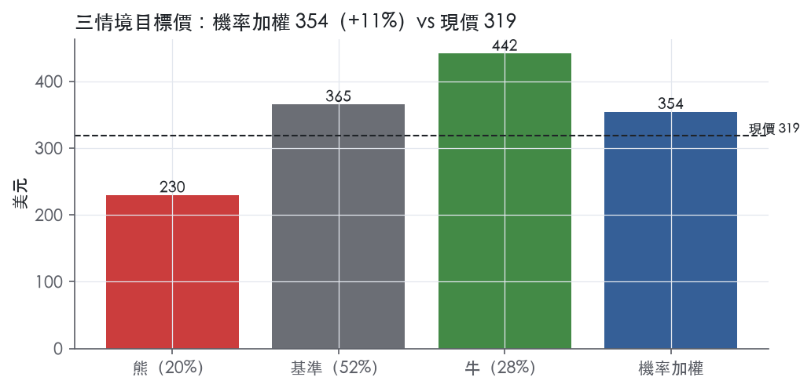
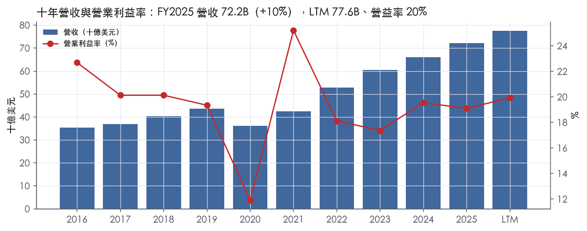
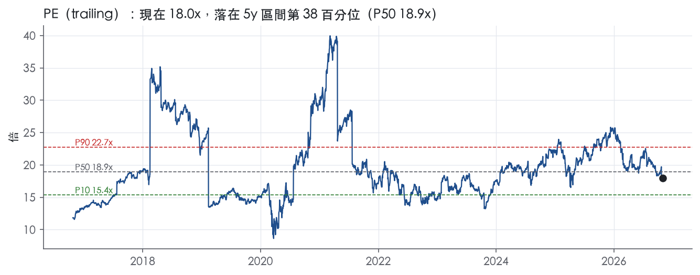
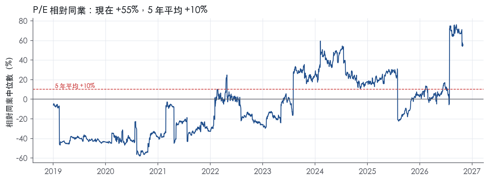
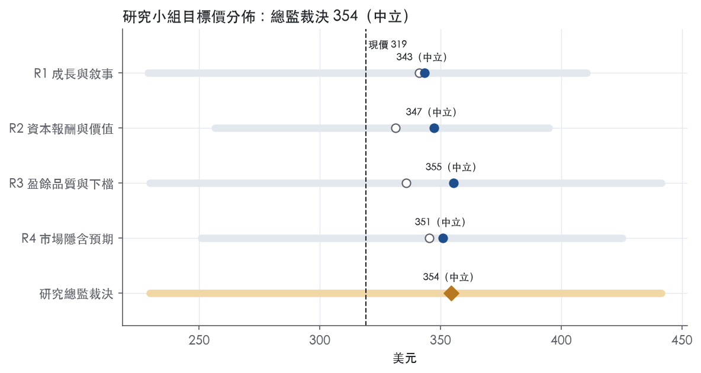
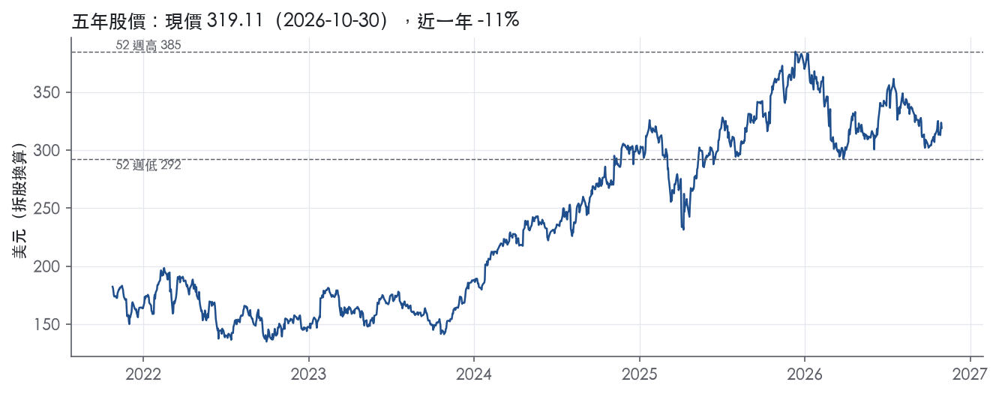

評等總表 › 金融 › AXP
去一次性後不貴，溫和看多｜評等 中立｜目標價 354
| 報告日 | 評等 | 目標價 | 當時股價 | 超額報酬 |
|---|---|---|---|---|
| 2026-10-30 | 中立 | 354 | 319 | +2.2% |
| 評等 | 中立（邊界，鄰近加碼） |
| 12 個月目標價 | 354 美元 |
| 現價 | 319.11 美元（2026-10-30） |
| 預期報酬 | 股價 +11.0%＋股息 1.2%＝總報酬 +12.2%；同業籃門檻 10.0%，超額 +2.2% |
| 估值方法 | P/E 17.0x，套在第 5–8 季的EPS（也就是一年後的未來四季） |
| 三情境 | 熊 230／基準 365／牛 442 |
| 研究流程 | 四位研究員兩輪辯論＋研究總監裁決 |
| 資料來源 | SEC EDGAR XBRL、Tiingo、FRED（全免費） |
去一次性後不貴，溫和看多（研究總監裁決，四位研究員兩輪辯論後）
評等 中立（邊界，鄰近加碼）｜12 個月目標價 354 美元（總監三情境機率加權 360 與研究員中位數 349 各半）｜現價 319.11（2026-10-30）
預期報酬：股價 +11.0%＋股息 1.2%＝總報酬 +12.2%。同業籃門檻 10.0%，超額 +2.2%，離加碼的分界不到三個百分點，屬邊界評等（落在其他級距的機率約三成）。
估值方法：P/E 17.0x，套在第 5–8 季的EPS（也就是一年後的未來四季）。三情境：熊 230（20%）／基準 365（52%）／牛 442（28%）。
立場看多而評等中立：評等看的是「預期總報酬 12.2% − 同業籃門檻 10.0%」＝超額 2.2%，不是絕對漲跌；看多但超額不足，代表上檔已被同業的預期報酬抵銷。
什麼會讓研究總監改變看法：FY2027 營收指引中點低於 7% 或 Q1 2027 本金淨沖銷率破 2.4%，倍數退回 16.2x、熊機率升到 30% 轉中性；指引維持營收 10% 加調整後 EPS 中雙位數，則基準營益率往 R4 的 19.8/20.0 靠、立場升級。
| 過去四季（實際，FY2026Q3） | 未來四季 | 第 5–8 季 | 第 9–12 季 | |
|---|---|---|---|---|
| 營收（B） | 77.6B | 84.6B | 91.3B | 97.7B |
| 營收成長 | 10.2% | 9.0% | 8.0% | 7.0% |
| 營業利益率 | 19.9% | 19.2% | 19.6% | 19.8% |
| EPS（美元） | 17.77 | 18.97 | 21.50 | 23.89 |
| EPS 成長 | 19.2% | 6.7% | 13.4% | 11.1% |
| 每股股息（美元） | 3.67 | 3.67 | 3.67 | 3.67 |
| P/E（現價） | 18.0x | 16.8x | 14.8x | 13.4x |
| 股息殖利率（現價） | 1.2% | 1.2% | 1.2% | 1.2% |
過去四季為申報數字；預測為研究總監的假設、程式計算。倍數與殖利率都用現價計算，用來看現價對應各期獲利的高低。
| 情境 | 機率（歷史） | 故事 | 未來四季營收成長 | 第 5–8 季營益率 | 倍數 | 目標價 | 股價漲跌 |
|---|---|---|---|---|---|---|---|
| 熊 | 20%（16%） | 對應風險表第 1 條：本行下行路徑失業率 5.1、利差 2.30，本金淨沖銷破 2.4% 觸發 CECL 前置回補與回購減速，倍數落到 P25–P50 之間 | 5.0% | 16.5% | 14.0x | 230 | -28.1% |
| 基準 | 52%（56%） | 刷卡量高個位數、年費與餘額接力、信用由回沖轉正常回補、效率方案部分抵銷禮遇成本，倍數停在歷史中位 | 9.0% | 19.6% | 17.0x | 365 | 14.5% |
| 牛 | 28%（28%） | 1 月 FY2027 指引維持營收 10%、調整後 EPS 中雙位數，配本行上行路徑（GDP 2.8、利差 1.45），倍數升到偏誤修正後 P75 | 10.0% | 20.8% | 19.0x | 442 | 38.4% |
目標價由程式依研究總監的驅動與倍數計算；機率由研究總監給定。括號內是歷史頻率：把這檔股票過去十年 12 個月報酬的波動形狀，置中在基準情境，結果落在各情境附近的比例。

四位研究員用不同方法各自估值，回應研究總監的質疑後交出第二輪，最後由總監逐點裁決。各研究員的主張見第七章，裁決理由見第八章，完整論證見《研究底稿》。
| 立場（一輪→二輪） | 加權目標價（一輪→二輪） | 評等（一輪→二輪） | 第二輪倍數 | 熊～牛目標價 | |
|---|---|---|---|---|---|
| R1 成長與敘事 | 中性→中性 | 341→343 | 中立→中立 | 18.5x | 229～411 |
| R2 資本報酬與價值 | 中性→中性 | 331→347 | 減碼→中立 | 18.8x | 256～395 |
| R3 盈餘品質與下檔 | 中性→中性 | 336→355 | 中立→中立 | 17.0x | 230～442 |
| R4 市場隱含預期 | 中性→中性 | 345→351 | 中立→中立 | 16.5x | 251～425 |
| 研究總監裁決 | 看多 | 354 | 中立 | 17.0x | 230～442 |
目標價由程式依各自的驅動與倍數計算；評等＝機率加權總報酬 − 同業籃門檻。
American Express 是一家由技術驅動的全球支付與高端生活品牌公司，透過發卡、商戶收單與卡網路三種業務同時賺錢¹。客群涵蓋消費者、小型企業、中型公司與大型企業，產品線包括信用卡與簽帳卡、旅遊與餐飲等生活禮遇、費用管理、銀行存款與非卡貸款、商戶收單結算與反詐欺、以及網路服務¹。公司同時是銀行控股公司（TRS）與金融控股公司，受聯準會、OCC、FDIC 與 CFPB 多線監管，這和單純的卡網路公司（Visa、Mastercard）性質不同。核心商業模式是「先靠消費驅動營收，其次才是利息與年費」，鎖定高消費、高信用品質的「premium」客群，再用會員禮遇（Membership Model）把這些客戶黏住，形成消費、放貸、收費三條營收腿¹。FY2025 全年刷卡量（worldwide billed business）達 1,670B 美元，年底全球自有卡在卡量 86.6M 張¹。
公司劃分四個可報告經營分部：美國消費者服務（USCS）、商業服務（CS）、國際卡服務（ICS）與全球商戶及網路服務（GMNS），其餘歸入 Corporate & Other，四個分部靠統一的整合支付平台互相串接¹。10-K 本身未在 Item 1 揭露各分部的營收占比與毛利結構，只說明業務內容，具體數字要看 MD&A 的「Business Segment Results of Operations」¹。發卡業務（USCS、CS、ICS）主打會員模式：信用卡/簽帳卡搭配 Membership Rewards、Amex Offers、機場貴賓室、餐飲平台（Resy、Tock）等禮遇，2025 年還推出新版 Amex Travel App 並改版美國消費與商業 Platinum 卡¹。商戶收單業務（GMNS）負責招募並維護全球商戶受理網路，透過 OptBlue 計畫讓第三方收單機構直接對接小商戶，另提供反詐欺工具、行銷解決方案與數據分析¹。卡網路業務透過與約 110 個國家和地區的第三方銀行合作發卡與收單，2025 年第三方發卡的全球處理量（processed volume）達 227.2B 美元，第三方發卡卡在卡量 66.2M 張¹。公司在全球一般用途卡網路中按刷卡量排名第四，落後 Visa、中國銀聯與 Mastercard¹。整體看，Amex 的分部劃分是「誰在用卡」而非「哪種產品」，USCS/CS/ICS 分別對應美國消費者、美國企業客戶、海外市場，GMNS 則是另一條收單與網路軌道。
產品透過行動與線上應用、聯盟行銷、客戶推薦計畫、第三方服務商與商業夥伴、內部銷售團隊、直接郵寄、電話與直接回應廣告等多元通路銷售¹。地區上，美國、英國、歐盟、澳洲、日本、加拿大與墨西哥是刷卡量的重要市場¹。聯名卡夥伴是客戶觸及的關鍵渠道，Delta Air Lines 是最大戰略夥伴，Delta 聯名卡組合占全球刷卡量約 13%、占全球卡會員貸款約 21%（截至 2025年底），合約到 2029 年底¹；其他聯名與合作夥伴包括 Marriott、British Airways、Hilton、Amazon（Pay with Points）、Coinbase、Credit Saison、SAP Concur、Emburse 等，涵蓋發卡、積分兌換、商戶受理擴展與費用管理整合¹。公司也持有 Global Business Travel Group（GBTG）股權並有商業合作，但這筆股權已在 2026 年出售完成，詳見下節。這種高度依賴單一聯名夥伴（Delta 占比逾一成刷卡量）的結構，是集中度風險，也是 Amex 能維持高端定位的槓桿。
FY2025Q4 營收 18.98B 美元，年增 10.5%，營益率回落到 16.3%（is/dv 資料包，8 季表）。FY2026Q1 營收 18.91B 美元、年增 11.4%，營益率回升至 20.0%（資料包 8 季表）。FY2026Q2，公司營收 19,637M 美元，年增 10%，EPS 4.53 美元、年增 11%，刷卡量 455.8B 美元、年增 9%²；管理層將全年營收成長指引上修至 10%，並維持全年 EPS 17.30–17.90 美元指引²；當季淨沖銷率 2.0%，與去年同期持平²。FY2026Q3，公司營收創紀錄達 20,062M 美元，年增 9%；EPS 5.42 美元，年增 31%，調整後 EPS 4.68 美元、年增 13%，調整項為出售 GBTG 股權的 982M 美元稅前利得（稅後 751M 美元）扣除重組費用後的淨額³；當季淨沖銷率降至 1.8%，去年同期為 1.9%³；公司將全年 EPS 指引上修至 18.30–18.60 美元（調整後 17.60–17.90 美元），並預期全年營收維持 10% 成長³。LTM 至 FY2026Q3，營收 77.59B 美元、EBITDA 17.38B 美元、GAAP 稀釋 EPS 17.77 美元（ltm.revenue/EBITDA/EPS.LTM@FY2026Q3）。整體來看過去四季營收成長率緩步從兩位數初段收斂到 9%，但淨利成長因稅率下降與一次性利得而提速，營運面的訊號是「成長放緩、獲利品質靠非經常項目撐高」，這點在解讀 Q3 EPS 年增 31% 時要扣除 GBTG 利得才有意義。
公司列出五大戰略重點：第一，擴大在高端消費市場的領導地位，持續提供涵蓋日常消費、借貸、旅遊與生活方式需求的會員禮遇，擴充全球夥伴陣容¹；第二，鞏固商業支付地位，演進企業卡與應付帳款費用管理解決方案，並開發針對企業客戶的融資、銀行與支付產品¹；第三，強化全球整合網路，持續擴大商戶受理、提供反詐欺與行銷洞察服務，並與網路合作夥伴擴展產品與服務¹；第四，延續獨特的全球定位優勢；第五，重新構思客戶與同仁體驗，以推動創新、提升生產力與效率、增強客戶滿意度，公司特別點出這是因應科技（包括生成式AI與 agentic commerce）改變工作與客戶期待而新增的重點¹。近期具體動作呼應這些重點：收購費用管理軟體公司 Center、推出新一代 Amex Corporate 與 Expense Management 軟體、與 Airbnb、Marriott、ALL Accor、Fanatics 建立或延展夥伴關係，以及 Resy 與 OpenAI 的整合、Intent Intelligence 框架布局 agentic commerce¹³。管理層在法說詞中強調「投資價值主張帶動加速消費與營收成長」、Platinum 系列是美國消費者業務中成長最快的產品組合，以及持續吸引 Millennial 與 Gen-Z 新客戶²。整體看，Amex 的成長故事仍是「用禮遇鎖高端客戶，再把聯名卡與商戶網路規模做大」的老配方，沒有脫離過去十年的打法；真正的變數是 agentic commerce 與開放銀行可能削弱其整合平台優勢、以及 Delta 聯名在歐盟 interchange 法規下的不確定性，這兩點公司自己在風險因子裡也承認，值得後續追蹤。GBTG 股權出售與伴隨的重組，顯示公司正在把非核心資產換成現金並優化成本結構，為 FY2026 EPS 指引上修提供了一次性墊腳石。

American Express 具備寬護城河。我們有把握未來 10 年以上 ROE 仍高於資本成本，支撐來自品牌、閉環網路效應與會員轉換成本三者疊加。趨勢判為穩定而非變寬，原因是高端卡市場的競爭加劇，守住護城河的成本正在上升。
優勢來源是三類：無形資產、網路效應、轉換成本，其中網路效應是核心。
成本優勢與效率規模不列入：10-K 雖提到兩端數據有助於降低詐欺與承作風險，但沒有可驗證的成本領先證據。
量化數據大致支持寬護城河，但有兩處需要說明。
支持的證據如下。ROE 十年平均 28.9%，減去資本成本代理值 10.0% 後超額 18.9%，有資料的 9 年中 9 年都高於資本成本。ROE 最低值 13.6% 仍高於資本成本代理值，也就是在疫情衝擊下依然沒有跌破門檻。稅前利益率十年平均 19.4%、標準差 3.3%，最新值 19.1% 與長期平均幾乎相同，獲利能力沒有被競爭侵蝕的跡象。近期 ROTCE 落在 32.9%至 36.1%之間，維持高檔。FY2026Q3 的 41.2%含 GBTG 出售利得，不應視為常態。
第一處衝突是資料包的 ROIC 欄位：FY2020 只有 6.4%，低於 10.0% 的資本成本代理值。我們仍維持寬評級，理由有三：
第二處是營收成長波動大，淨營收成長標準差 10.8%，最低 -17.1%。這反映的是消費量對景氣的敏感度，不是護城河鬆動，因為利益率的標準差明顯較小。
另一個要點是效率比長期落在 72.3%至 76.4%的高位。這說明超額報酬中有相當部分要持續回饋給卡會員禮遇與行銷，護城河並非免費維護。
最大威脅是高端客群與聯名夥伴的爭奪，其次是監管與支付去中介化。
目標倍數應相對發卡銀行同業給予溢價，理由是 ROE 長期穩定高於資本成本，且閉環網路與品牌是銀行同業沒有的結構性優勢。溢價幅度應低於純網路公司，因為公司承擔信用風險、受銀行資本監管，且效率比顯示禮遇成本持續上升。目前 P/E 18.0x 略低於 5 年中位數 18.9x；在護城河穩定的前提下，我們不認為需要對歷史區間打折。
| 指標 | 最新 | 十年平均 | 標準差 | 最低 | 最高 |
|---|---|---|---|---|---|
| ROIC | 26.0% | 18.1% | 7.4% | 6.4% | 28.6% |
| 營業利益率 | 19.1% | 19.4% | 3.3% | 11.9% | 25.2% |
| FCF 利潤率 | 22.2% | 24.7% | 7.5% | 11.4% | 36.4% |
| ROE | 34.0% | 28.9% | 8.2% | 13.6% | 35.7% |
程式計算。資本成本代理值（10 年債＋5%）：10.0%；ROIC 平均減資本成本：8.2%；ROIC 有資料的 9 年中，高於資本成本 8 年。
AXP 是發卡銀行，CFO、FCF、EBITDA、淨負債在這類放款／存款業務裡沒有意義，不應作為盈餘品質的現金佐證（依資料包定義說明）。對銀行而言，真正該看的現金等價指標是信用損失準備與沖銷率是否與放款成長同步——FY2025 放款與應收款（Card Member loans and receivables）年增 8%⁴，Card Member loans 備抵／放款比例由 FY2024 的 4.1% 降到 FY2025 的 3.9%（餘額從 5,679M 升到 5,909M）⁴，同時淨沖銷率（本金＋利息＋手續費）維持在 2.3%，與上年持平，僅比 FY2023 的 2.0% 略升⁴。30 天以上逾期率維持 1.3% 三年未變⁴。這代表放款規模擴張的同時，信用品質沒有惡化，提列與沖銷的節奏是健康的，不是靠放寬標準做出來的營收與淨利成長。Q3 2026 進一步確認：淨沖銷率降到 1.8%（去年同期 1.9%），且當季出現備抵回沖而非回補³，顯示信用面持續正向，支撐盈餘的「現金等價」基礎穩固。
最新一季非 GAAP 調整的主項目是出售 GBTG 股權投資的利得：稅前利得 982M 美元（稅後 751M 美元），公司把這筆利得扣除後計算 Adjusted EPS，同時說明利得已淨額用於資助效率改善方案相關的重組費用³。結果是 Q3 2026 GAAP 稀釋 EPS 5.42 美元，調整後僅 4.68 美元，差距高達 0.74 美元、約 16%³；累計前九個月 GAAP EPS 14.22 美元對 Adjusted EPS 13.49 美元³。全年指引同樣是兩套數字：GAAP 18.30–18.60 美元 vs. Adjusted 17.60–17.90 美元³。值得注意的是，這不是單一事件：FY2024 淨利與 EPS 成長中，也包含出售 Accertify Inc. 產生的每股 0.66 美元利得⁴。兩年連續出現「出售股權投資利得」墊高 GAAP 淨利的模式，我認為這是真實的一次性非經常項目，estimate 用 GAAP 數字會系統性高估經常性獲利能力，應以公司自行揭露的 Adjusted EPS 為基礎看核心盈餘。效率方案相關的重組費用則是真實現金成本，不應被忽略或加回看待。
資本結構持續擴張但在監理目標帶內運作：長期債務由 FY2023 的 47.866B 增加到 FY2025 的 56.387B（年增 13%），顧客存款同期由 129.144B 增至 152.488B⁴，顯示資產成長主要靠存款與長債融資而非股本稀釋。CET1 資本比率 FY2025、FY2024 皆維持在 10.5%，落在公司自訂的 10–11% 目標區間內⁴。股東回饋方面，FY2025 以回購與現金股利合計回饋股東 7.6B 美元⁴，並宣布 FY2026 第一季起普通股常規股利將提高約 16%⁴；股數持續淨減少，FY2024 平均稀釋股數 713M 降至 FY2025 的 696M⁴，Q3 2026 平均稀釋股數再降至 674M（去年同期 693M）³。ROE 從 FY2023 的 31.5% 升到 FY2025 的 33.9%⁴，資本效率持續改善。整體資本配置屬於穩健擴表＋積極回購股東的組合，沒有看到槓桿失控或資本被掏空的訊號。
量化計分表三項皆綠燈，但仍需逐一檢視是否有被掩蓋的問題：
估值應以 Adjusted EPS（Q3 2026 為 4.68 美元、FY2026 guidance 中位數約 17.75 美元）為基礎，而非 GAAP 數字，因為 GBTG 與 Accertify 兩筆股權投資出售利得連續兩年墊高 GAAP 淨利，屬於不可重複的一次性項目。槓桿（長債與存款同步擴張但 CET1 穩定在目標區間）不構成限制倍數的理由，但放款成長若持續快於存款與資本成長，需要留意 CET1 是否逼近區間下緣，進而限制未來回購力度。整體而言，盈餘品質可信度中等偏高：核心信用指標（沖銷率、備抵覆蓋率）健康且經營性盈餘成長扎實，但對 GAAP EPS 應打折處理，建議估值模型採 Adjusted EPS 並對近兩年來自投資出售的利得部分做永久性剔除。
| 項目 | LTM | 近三年 | 十年 | 燈號 | 規則 |
|---|---|---|---|---|---|
| SBC／營收 | 0.8% | 0.8% | 0.7% | 綠 | ≤3.0% 綠、>8.0% 紅 |
| 稀釋股數年變動 | -0.7% | -2.5% | -3.2% | 綠 | ≤0.0% 綠、>3.0% 紅 |
| （股利＋回購）／淨利 | 75.1% | 72.9% | 84.8% | 綠 | ≥50.0% 綠、<0.0% 紅 |
程式計算；燈號以 LTM（無則近三年平均）判定。
| 風險 | 觸發指標（看什麼數字、在哪裡看） | 對 EPS 的影響方向與粗略幅度 | 未來 12 個月發生機率（高／中／低） | 出處 |
|---|---|---|---|---|
| 宏觀景氣轉弱衝擊高端消費與信用表現 | 季度淨沖銷率（nco_rate，8-K 揭露）、刷卡量年增率（billed business YoY，8-K） | 方向：負向；幅度：大（淨沖銷率上升會同時打信用成本與營收成長） | 中 | ⁵³ |
| 聯名卡集中度（Delta）與夥伴續約風險 | Delta 聯名卡組合占刷卡量/貸款比例（10-K 揭露）、合約到期日 2029 年底 | 方向：負向；幅度：大（Delta 占全球卡會員貸款約 21%、刷卡量約 13%） | 低 | |
| 商戶折扣費率（discount rate）被監管與競爭侵蝕 | 商戶折扣收入成長率 vs 刷卡量成長率（MD&A 分部揭露）、Visa/Mastercard 和解案進展 | 方向：負向；幅度：中（侵蝕是漸進式，但長期壓縮毛利） | 中 | 10-K 年報 FY2025 Item 1A（風險因素） |
| 監管升級（Category II 門檻、消費金融新規、裁罰） | 公司是否被重新分級（10-K 揭露目前為 Category III）、新增訴訟/和解公告（8-K） | 方向：負向；幅度：中（合規成本上升、罰款、資本行動受限） | 中 | 10-K 年報 FY2025 Item 1A（風險因素） |
| 資安/技術中斷事件 | 公司是否公告重大資安事件（8-K）、第三方服務中斷新聞 | 方向：負向；幅度：中至大（一次性但可能很深，含品牌損傷） | 低 | 10-K 年報 FY2025 Item 1A（風險因素） |
宏觀景氣轉弱是公司自己列為第一條的風險，10-K 寫明小型企業與法人客戶刷卡量占 2025 年全球刷卡量約 41%，對景氣循環高度敏感⁵。公司 Q3 2026 淨沖銷率已降到 1.8%（去年同期 1.9%），信用品質目前健康，但這正是順週期指標，一旦轉弱會同步反映在營收成長放緩與信用成本上升兩端³。監測重點是每季 8-K 揭露的淨沖銷率與刷卡量年增率，兩者同時走弱才是真正的警訊。
聯名卡集中度是業務概況章已點出的結構性弱點：Delta 聯名卡組合占全球刷卡量約 13%、占全球卡會員貸款約 21%（截至 2025 年底），合約到 2029 年底。10-K Item 1A 明確警告，聯名夥伴流失或續約條件轉差「可能對業務與經營成果造成重大不利影響」，且公司支付給聯名夥伴的金額已經在上升、尤其在美國⁵。這條風險機率標「低」是因為合約還有三年多才到期，但一旦有展約談判的雜音（例如條件外洩、提前終止傳聞），EPS 衝擊會是結構性而非一次性。
商戶折扣費率侵蝕源自雙重壓力：一是監管對 interchange fee 的持續關注與 Visa/Mastercard 2025 年 11 月提出的和解協議（若通過，將降低並設上限、擴大商戶加價選擇權），即便 Amex 不直接受該和解約束，競爭對手降價會對 Amex 折扣費率形成向下壓力⁵；二是公司為擴大商戶受理而持續讓利，10-K 承認「我們已經歷隨受理擴大而來的折扣費率侵蝕」⁵。這是慢性、漸進的毛利壓縮，不是急性事件，故機率標「中」但幅度持續而非爆發。
監管升級風險的具體看點是公司目前的銀行監管分類。10-K 明確寫出公司現為美國聯邦銀行監理機構分級框架下的 Category III 公司，若成長至 Category II，將面臨更嚴格資本與監管要求、增加合規成本⁵。另外 10-K 也揭露 2025 年已就美國小型企業客戶歷史銷售行為的政府調查達成和解協議，顯示監管機關對 Amex 業務行為的審查仍在進行中⁵；Q3 2026 費用上升的一部分正來自「先前揭露事項的法律準備金增加」³，這代表舊案的財務尾巴還沒結束。
資安/技術中斷列入是因為 10-K 用整段篇幅強調這是「可能導致重大法律、監管與財務損失」的風險，且公司承認已有第三方服務商遭受勒索軟體攻擊、影響到公司資料或服務⁵。機率標「低」是因為過去未見重大揭露事件，但一旦發生影響可能很深（強制換卡、監管介入、品牌損傷同時發生）。
一次性利得被用來墊高 EPS 指引的可持續性問題：Q3 2026 EPS 年增 31% 主要來自出售 GBTG 股權的 982M 美元稅前利得（稅後 751M 美元），調整後 EPS 僅成長 13%，公司上修的全年 EPS 指引（18.30–18.60 美元）包含這筆一次性收益³。市場若誤把 GAAP EPS 成長率當作營運動能延伸到 FY2027，股價可能有修正風險，這點公司在風險因子章完全沒提，因為這是財報品質問題而非傳統風險因子。
有效稅率下降對淨利成長的貢獻度：本季有效稅率從 24.1% 降至 18.1%，主因是前期稅務事項解決帶來的一次性稅務利益，這同樣墊高了淨利年增 28% 的數字，但屬於不可持續的項目³。若 FY2027 稅率回升至正常水準，EPS 基期會明顯墊高，這是量化模型必須扣除的雜訊，公司財報沒有把它當成風險揭露，但投資人需自行校正。
現價 319.11 對應 trailing（過去四季）P/E 18.0x、EV/EBITDA 13.3x、EV/EBITA 14.9x、EV/Sales 3.0x、FCF 殖利率 6.5%。主要估值倍數 P/E 現在 18.0x，落在5 年區間第 38 百分位（P10／P50／P90 = 15.4x／18.9x／22.7x）。

把程式的機械基準預測放到現價下，市場付的前瞻倍數是：P/E（未來四季） 16.2x、P/E（第 5–8 季） 14.7x。反推 DCF 顯示市價隱含未來五年營收年成長 7.6%（WACC 9.0%、終值成長 3.0%、FCF 利潤率 13.3%，SBC 不加回）。
| 倍數 | 現在 | 5 年 P10 | 5 年 P50 | 5 年 P90 | 現在分位 | 全期 P50 |
|---|---|---|---|---|---|---|
| P/E | 18.0x | 15.4x | 18.9x | 22.7x | 37.8% | 18.8x |
| EV/EBITDA | 13.3x | 10.8x | 13.0x | 15.8x | 54.6% | 13.3x |
| EV/EBITA | 15.0x | 12.6x | 14.9x | 17.9x | 51.5% | 15.4x |
| EV/EBIT | 15.0x | 12.6x | 14.9x | 17.9x | 51.5% | 15.4x |
| EV/Sales | 3.0x | 2.3x | 3.0x | 3.6x | 52.7% | 3.0x |
| P/S | 2.8x | 2.1x | 2.8x | 3.5x | 45.3% | 2.5x |
| P/FCF | 15.5x | 7.0x | 9.9x | 17.4x | 80.1% | 11.2x |
trailing 倍數（股價 ÷ 過去四季）；分位以每個交易日計算。
同業籃：V, MA, COF, SYF, PYPL（手動名單（playbooks/peers.yaml））。評等門檻 10.0%：同業「倍數不變下持有一年」的隱含報酬中位數（＝ FCF 殖利率 ×(1＋g)＋g，g 為 5 年營收年複合成長並夾在 −2%～8%），每家夾在 0～15%、P/E 低於 5 倍視為資料可疑而排除，中位數再限制在 10 年債到 10 年債＋5% 之間（同業原始中位數 15.0%）；排除：V（隱含報酬算不出來）、SYF（隱含報酬算不出來）。
| 代號 | 市值 | 5 年營收 CAGR | 營益率 | ROIC | P/E | 5 年 P/E 中位數 | EV/EBITDA | P/FCF | 隱含報酬 |
|---|---|---|---|---|---|---|---|---|---|
| AXP | 214.1B | 14.9% | 19.9% | 26.0% | 18.0x | 18.9x | 13.3x | 15.4x | 14.0% |
| V | — | 12.9% | 61.1% | 42.4% | — | — | — | — | — |
| MA | 558.9B | 16.5% | 58.6% | 93.9% | 33.4x | 37.0x | 25.5x | 34.8x | 11.2% |
| COF | 125.7B | 13.4% | 21.0% | 2.5% | 12.2x | 11.1x | 5.9x | 4.2x | 16.9% |
| SYF | 23.4B | — | — | 20.7% | 7.9x | 6.8x | 5.0x | — | — |
| PYPL | 47.7B | 9.1% | 17.0% | — | 11.0x | 17.5x | 7.5x | 7.6x | 17.8% |
| 同業中位數 | 13.1% | 39.8% | 31.5% | 11.6x | 14.3x | 6.7x | 7.6x | 10.0% |
全部 trailing，程式以各公司 SEC XBRL 與 Tiingo 行情計算；第一列為本檔。
P/E 相對同業中位數：現在 55.2%，過去 1 年平均 22.1%、3 年 22.2%、5 年 10.3%；EV/EBITDA 相對同業中位數：現在 95.7%，過去 1 年平均 60.0%、3 年 47.8%、5 年 29.0%。

事後實現前瞻倍數帶（P/E，2018-11-19..2025-11-17）：P10／P50／P90 = 11.7x／16.2x／24.8x。它是每個交易日的股價除以之後四季實際實現的指標；一年後，今天的第 5–8 季正是那時的未來四季，所以這條帶是 12 個月目標價的同口徑倍數。因為用的是事後實際而非當時預期，過去成長超乎預期的公司這條帶會偏低。
程式的機械基準（成長率從過去四季年增率三年收斂到 6%、利潤率持平）用 事後實現前瞻 P/E P50 估值得到 351（9.9%），市場現行前瞻倍數（現價 ÷ 基準 未來四季指標）一年後持平，套在基準 第 5–8 季指標得到 352。這兩個數字只是參考點，不是本報告的目標價；研究員對這個定價的回應在第七章。
下表是每位研究員第一輪（各自獨立）與第二輪（回應研究總監的質疑後）的結果。目標價全由程式依各自的假設計算。
| 立場（一輪→二輪） | 加權目標價（一輪→二輪） | 評等（一輪→二輪） | 第二輪倍數 | 熊～牛目標價 | |
|---|---|---|---|---|---|
| R1 成長與敘事 | 中性→中性 | 341→343 | 中立→中立 | 18.5x | 229～411 |
| R2 資本報酬與價值 | 中性→中性 | 331→347 | 減碼→中立 | 18.8x | 256～395 |
| R3 盈餘品質與下檔 | 中性→中性 | 336→355 | 中立→中立 | 17.0x | 230～442 |
| R4 市場隱含預期 | 中性→中性 | 345→351 | 中立→中立 | 16.5x | 251～425 |
| 研究總監裁決 | 看多 | 354 | 中立 | 17.0x | 230～442 |
目標價由程式依各自的驅動與倍數計算；評等＝機率加權總報酬 − 同業籃門檻。
分歧度：第一輪 加權目標價 331～345（區間＝現價的 4%）· 倍數 16.2～18.5x · 立場 中性×4（方向一致）；第二輪 加權目標價 343～355（區間＝現價的 4%）· 倍數 16.5～18.8x · 立場 中性×4（方向一致）。

| 研究員 | 第二輪主張 | 堅持的理由 |
|---|---|---|
| R1 成長與敘事 | 中性，未來一年盈餘給 18.5x，營收由 9.0% 逐年降到 7.0%。 | 倍數錨在自家五年中位數 18.9x，不改用盈餘超預期期間偏低的前瞻倍數。 |
| R2 資本報酬與價值 | 中性，倍數 18.8x 錨十年中位數，營益率回到十年均值 19.4%。 | 第二、三年營益率不上調，因為禮遇成本持續吃掉規模效益。 |
| R3 盈餘品質與下檔 | 中性，第二年盈餘給 17.0x，營益率由 19.2% 慢慢回到 19.8%。 | 準備回沖與處分利得已從盈餘剔除，倍數不能再補一次，所以不往高檔走。 |
| R4 市場隱含預期 | 中性，倍數 16.5x 略高於市場付的 16.2x，營收由 9.0% 降到 7.0%。 | 市場沒為成長延續付錢，1 月營收指引中點達 8% 時倍數會上移。 |
每位研究員的逐條回應與完整論證見《研究底稿》（AXP_研究底稿_2026-11-01.docx）。
| 分歧點 | R1 | R2 | R3 | R4 | 什麼資料會分出勝負 |
|---|---|---|---|---|---|
| 營益率 y1–y3 | 19.6／20.1／20.4，只剔 GBTG 利得，拿 H1 當乾淨錨外推擴張 | 19.6／19.4／19.4，回歸十年均值 | 19.2／19.6／19.8，GBTG 與準備回沖都剔，效率方案慢慢回補 | 19.6／19.8／20.0，H1 年增定錨 | Q4'26、Q1'27 的提列是回沖還是回補；費用年增對營收年增 |
| 營收降速 y2／y3 | 8／7 | 7.4／6.5（沿基準） | 7.5／7 | 8／7 | 1 月下旬 FY2027 營收指引中點；Q4'26 刷卡量年增 |
| 目標倍數與口徑 | 18.5x@ntm，5y P50 再打利率折扣 | 18.8x@ntm，10y P50 | 17.0x@q5_q8，前瞻帶 P50 修偏誤 | 16.5x@q5_q8，P50 稍上，不修偏誤 | Q4 財報後股價對 FY2026 調整後 EPS 的倍數守不守 18–19x |
| 熊情境深度 | 營收 2／3／5、15x | 營收 5／4、15.4x | 營收 5／3.5／6、CECL 回補、買回減速、14x | 營收 6.5／4／5、13.5x | Q1'27 本金淨沖銷率破不破 2.4%、刷卡量跌不跌破 5% |
| 牛／熊機率 | 26／22（歷史 34／17） | 32／24（40／23） | 25／20（27／17） | 26／23（30／22） | 失業率走 4.3 還是 5.1；利差停 1.75 還是 2.30 |
營益率：選 R3（19.2／19.6／19.8）。 Q3 的 22.6%被兩件事墊高：GBTG 利得（調整後淨利 3.2B 對 GAAP 3.7B）與「本季回沖、去年同期回補」的提列差³。R1、R4 只剔第一件，再拿 Q1、Q2 的 20.0%、20.7%（FY2026Q2）當乾淨錨；但 R3 指出準備回沖已連續兩季，Q2 的 20.7% 同樣含回沖，而且 Q2 費用年增 12% 高於營收的 10%（R3 引 8-K 2026-07-24）——扣掉信用，沒有營運槓桿。本行前提是利差 1.49→1.75、成長 1.8，回沖會轉成回補，y1 落回 FY2025 的 19.1%附近是對的。R2 的 19.4% 持平忽略了由利得出資的重組與 Platinum 年費滾入。預測紀錄也站 R3 這邊：R1、R4 的營業利益誤差中位數 +2.6%、+1.8% 偏高，R3 是 +0.6%；機械基準偏低 3.9%，是我不跟 R2 壓平、而接受 R3 回補到 19.8% 的理由。
營收：選 R1（9.0／8.0／7.0，R4 相同）。 管理層說 FY2026 仍會做到 10%，但季度年增 11.4%→10.0%→8.9%（8 季表）、Q3 刷卡量只有 8%³，R1「NTM 守不住 10%」的機制成立。不跟 R2 的 7.4／6.5：他沒有降速更快的個股證據，只是沿用收斂，而且他是四人中唯一營收輸給機械基準的（46%）。AXP 在無衰退的 FY2018、FY2019 做到 9.4%、8.0%；國外受理四年翻倍，消費、餘額帶動的淨利息收入、卡費仍是 Q3 的三個成長來源³。本部四人與我的營收誤差中位數都是負的（-0.4%～-0.7%），系統性偏低，裁決要往上而不是往下。
倍數：選 R3（17.0x，eps@q5_q8）。 四人的點估其實相同——R2 的 18.8x@ntm 得 362、R3 的 17.0x@q5_q8 也得 362（程式結果表）——分歧在口徑不在價格。劇本主尺是 q5_q8；事後實現帶 P50 16.2x 因 FY2021–FY2025 盈餘超預期而偏低（我 Q1 的論證，R3 已採納）。17.0x 等於「一年後 trailing 倍數停在 5y／10y P50 18.9x／18.8x」，不是擴張主張。R4 的 16.5x 沒修這個偏誤；R1 自承「只因為利率環境略低於 P50」，違反利率不重複計算，雖然他的價格仍高於市場持平，這條理由劃掉。高於市場持平 16.2x 的 5%（程式檢查表）是個股理由：乾淨口徑的現行倍數已高於 18.0x（R2 第二輪）；股價一年 -11.1%、trailing P/E 在 1 年帶 1.6% 分位、5 年帶 37.8%，而前九個月調整後 EPS 年增 14%³；護城河章判寬且穩定，不需對歷史打折。不往 P75 走：折扣費率「已經歷侵蝕」、Category II 門檻、Delta 占卡會員貸款 21%⁵。
熊情境：選 R3。 四人的熊都對應風險表第 1 條，差在深度。R1 的營收 2% 是疫情式量縮，本行下行路徑是 GDP 0.3、失業 5.1 的停滯，不是 FY2020 的 -17.1%；R4 的 18.5% 營益率在回補期太高。R3 有兩個別人沒有的機制：CECL 前置回補把 y2 營益率壓到 16.5%，以及 CET1 10.5% 只在 10–11% 區間中段⁴時回購減速到 -1.5%。R2 拒絕 V6 的理由（倍數定價下一段信用惡化）我接受，但他的熊沒有 y3、沒有回購減速，取 R3 的 14.0x，不另加深。
機率：own，28／52／20。 見「三情境與機率」。
漂移與總經偏離。 無退回：R2 靠攏 39%，五項修正各附 8-K 差額、10-K Item 7、10 年帶；R3 的 16.2x→17.0x 是回應我的 Q1 論證，方向反而遠離中位數；R1、R4 反向移動。R2 的 capex 4.2% 對 EPS 主尺無影響，不列。四人 macro_deviations 皆空：R4 撤回「政策利率不降撐 NII」（E6）正確，8 季 nii_to_assets 只在 5.8%–6.4% 之間（dv.nii_to_assets）、2 年期敏感度 t 值 1.7 不可靠；R1 用下行路徑的 3.88 政策利率解釋熊情境 y3 回升，與前提一致。本行 macro_deviations 為空。
與機械基準不同的驅動：rev_growth_y1 9.0%（基準 8.8%）、y2 8.0%（7.4%）、y3 7.0%（6.0%）；op_margin_y1 19.2%（19.9%）、y2 19.6%、y3 19.8%，理由如上。稅率 21.4%、股數 -2.7%、D&A、SBC 沿用基準：四人第二輪都放棄 22.5% 稅率，discrete 稅務利益年年出現（2025Q2 18.7%、2026Q3 18.1%⁶），三年中位數本來就含它；股數有 Q3 平均稀釋股數年減 3%³與 CET1 落在目標區間⁴支撐。
目標倍數 17.0x，eps，q5_q8。錨：事後實現前瞻帶 P50 16.2x 做偏誤上修；交叉錨是自家 trailing 5y／10y P50 套 ntm（R2 路徑，得同一個價）。相對同業：PE 對同業中位數溢價從 5 年平均 10.3% 擴到 55.2%，但這是 PYPL 17.5x→11.0x、MA 37.0x→33.4x 拉低籃子，COF、SYF 反而高於各自 5 年中位數（同業比較表）；AXP 對發卡銀行的溢價有 ROIC 26.0%對 COF 2.5%、ROTCE 36.1%支撐，我們錨自家歷史，不錨籃子。
機率從歷史出發：同形狀情境的歷史對照是牛 27／基準 56／熊 17（R3 程式結果表）。熊多給 3 個百分點：本行基準 GDP 1.8 低於官方 2.4、利差走寬、小企業與法人占刷卡量約 41%⁵；但本行一年內衰退機率 25% 低於歷史 31%、Q3 本金淨沖銷 1.8% 且仍在回沖³，所以不給到 25%。牛多給 1 個百分點：1 月指引是有日期的催化，股價已比一年前低 11.1%。牛高於熊與這檔股票的歷史順序一致，也是對本部 22 份報告全部熊高於牛的修正。
現價對機械基準 NTM 盈餘付 16.2x，正好是事後實現帶 P50；我們的 Q5–Q8 盈餘與基準接近（營收略高、營益率略低互抵，程式會列出），差距全在倍數與機率：倍數高 5% 來自帶的偏誤修正，實質是 trailing 倍數停在歷史中位；機率上牛 28 高於熊 20。立場溫和看多，加權超額是低個位數，程式若給中立，差在幅度不在方向——我們不把它當高信念加碼，要到 1 月指引確認延續期才升級。
現價 319.11 → 點估目標價 365 → 機率加權目標價 360 → 目標價 354，差距拆成五段：成長順延 +33 美元（市場現行倍數 16.2x 一年後持平、獲利照機械基準）；倍數差 +17 美元（總監倍數 17.0x vs 市場持平倍數 16.2x，同一機械基準預測）；盈餘差 -3 美元（總監預測的第 5–8 季EPS 0.0B vs 機械基準 0.0B，同一倍數）；情境不對稱 -6 美元（機率加權減點估）；研究小組平均 -5 美元（總監機率加權 360 與研究員第二輪中位數 349 各半）。各段相加等於目標價減現價。本階段未接賣方共識，差距以市場隱含預期為對照。
| 驅動 | 機械基準 | 研究總監 | 差異 |
|---|---|---|---|
| 未來四季營收成長 | 8.8% | 9.0% | +0.2 pp |
| 第 5–8 季營收成長 | 7.4% | 8.0% | +0.6 pp |
| 第 9–12 季營收成長 | 6.0% | 7.0% | +1.0 pp |
| 未來四季營益率 | 19.9% | 19.2% | -0.7 pp |
| 第 5–8 季營益率 | 19.9% | 19.6% | -0.3 pp |
| 第 9–12 季營益率 | 19.9% | 19.8% | -0.1 pp |
| D&A／營收 | 2.5% | 2.5% | ＝ |
| 資本支出／營收 | 4.8% | 4.8% | ＝ |
| SBC／營收 | 0.8% | 0.8% | ＝ |
| 稅率 | 21.4% | 21.4% | ＝ |
| 股數年變動 | -2.7% | -2.7% | ＝ |
研究總監只寫偏移，未寫的沿用基準。
| 期 | 營收 | 成長 | 營益率 | 營業利益 | EBITDA | EBITA | 淨利 | EPS | FCF | 期末淨負債 |
|---|---|---|---|---|---|---|---|---|---|---|
| 未來四季 | 84.6B | 9.0% | 19.2% | 16.2B | 18.3B | 16.2B | 12.8B | 18.97 | 11.5B | 14.2B |
| 第 5–8 季 | 91.3B | 8.0% | 19.6% | 17.9B | 20.1B | 17.9B | 14.1B | 21.50 | 12.7B | 10.8B |
| 第 9–12 季 | 97.7B | 7.0% | 19.8% | 19.4B | 21.8B | 19.4B | 15.2B | 23.89 | 13.7B | 6.2B |
程式依上表的驅動計算；季度用最近四季季節性分攤；不含營運資金變動。
估值方法：P/E 17.0x，套在第 5–8 季的EPS（也就是一年後的未來四季）。研究總監目標倍數的錨：事後實現前瞻 P/E 帶 P50 16.2x 因 FY2021–25 盈餘超預期偏低，部分上修；交叉錨自家 trailing 5 年/10 年 P50 18.9x/18.8x 套 ntm 得同價；高於市場持平 16.2x 的 5% 是個股理由（乾淨現行倍數已高於 18.0x、一年跌 11% 而調整後 EPS +14%、護城河寬且穩定），不錨被 PYPL/MA 拉低的同業籃。
計算：EPS（第 5–8 季） 21.50 × 17.0x → 點估目標價 365（14.5%）；隱含 P/E（未來四季）19.3x、P/E（第 5–8 季）17.0x、EV/EBITDA（第 5–8 季）12.2x、FCF 殖利率（第 5–8 季）5.5%。
總監三情境機率加權目標價 360，研究員第二輪中位數 349，兩者各半＝目標價 354；預期報酬 股價 +11.0%＋股息 1.2%＝總報酬 +12.2%；減評等門檻 10.0%（同業籃隱含報酬中位數（V, MA, COF, SYF, PYPL））＝超額報酬 +2.2% → 評等 中立（超額 >+15% 買進、+5～+15% 加碼、±5% 中立、−5～−15% 減碼、<−15% 賣出）。同一份資料重開研究小組，超額約有正負四個百分點的雜訊（一個標準差，二十檔實測）；以此估計，評等落在其他級距的機率約三成。超額離加碼的分界不到三個百分點，應視為邊界評等。
| 情境 | 機率 | 未來四季成長 | 第 5–8 季成長 | 第 5–8 季營益率 | EPS（第 5–8 季） | 倍數 | 目標價 |
|---|---|---|---|---|---|---|---|
| 熊 | 20% | 5.0% | 3.5% | 16.5% | 16.39 | 14.0x | 230 |
| 基準 | 52% | 9.0% | 8.0% | 19.6% | 21.50 | 17.0x | 365 |
| 牛 | 28% | 10.0% | 9.0% | 20.8% | 23.24 | 19.0x | 442 |
| 主張 | 驗證日 | 看哪個數字 | 門檻 |
|---|---|---|---|
| FY2027 營收成長指引中點不低於 8% | 2027-01-31 | FY2027 營收成長指引區間中點（Q4 2026 8-K） | >= 8% |
| GBTG 利得滾出後，NTM 營益率守住 19.2% | 2027-10-31 | >= 19.2% | |
| 信用正常化但未惡化 | 2027-07-31 | Q2 2027 net write-off rate, principal only（8-K） | <= 2.3% |
| 刷卡量未降速到個位數中段以下 | 2027-04-30 | Q1 2027 FX-adjusted billed business 年增率（8-K） | >= 7% |
到期由程式結算（第 5 階段帳本）。
內文上標數字對應下列公司申報文件；未標上標的分析與判斷，是研究小組的觀點。報告中的每個數字都經程式逐一核對資料包或原文。
| 期 | 營收 | 成長 | 毛利率 | 營益率 | EBITDA | 淨利 | EPS | CFO | FCF | ROIC | 淨負債 | 稀釋股數 |
|---|---|---|---|---|---|---|---|---|---|---|---|---|
| FY2016 | 35.4B | — | — | 22.7% | 9.1B | 5.4B | 5.61 | 8.3B | 6.9B | — | 27.1B | 0.9B |
| FY2017 | 36.9B | 4.1% | — | 20.1% | 8.7B | 2.7B | 2.99 | 13.5B | 12.5B | 10.5% | 25.7B | 0.9B |
| FY2018 | 40.3B | 9.4% | — | 20.1% | 9.4B | 6.9B | 7.91 | 8.9B | 7.6B | 13.9% | 33.5B | 0.9B |
| FY2019 | 43.6B | 8.0% | — | 19.4% | 9.6B | 6.8B | 7.99 | 13.6B | 12.0B | 11.4% | 39.6B | 0.8B |
| FY2020 | 36.1B | -17.1% | — | 11.9% | 5.8B | 3.1B | 3.77 | 5.6B | 4.1B | 6.4% | 11.7B | 0.8B |
| FY2021 | 42.4B | 17.4% | — | 25.2% | 12.4B | 8.1B | 10.02 | 14.6B | 13.1B | 21.2% | 19.2B | 0.8B |
| FY2022 | 52.9B | 24.7% | — | 18.1% | 11.2B | 7.5B | 9.85 | 21.1B | 19.2B | 19.7% | 10.2B | 0.8B |
| FY2023 | 60.5B | 14.5% | — | 17.4% | 12.2B | 8.4B | 11.21 | 18.6B | 17.0B | 25.6% | 2.4B | 0.7B |
| FY2024 | 65.9B | 9.0% | — | 19.6% | 14.6B | 10.1B | 14.01 | 14.1B | 12.1B | 28.6% | 10.2B | 0.7B |
| FY2025 | 72.2B | 9.5% | — | 19.1% | 15.6B | 10.8B | 15.38 | 18.4B | 16.0B | 26.0% | 9.2B | 0.7B |
SEC XBRL；每股數據已依拆股換算到現在股數基準。EBITDA 空白 = 該年無形攤銷在 companyfacts 中缺 tag。
| 期 | 期末 | 推導 | 營收 | 毛利率 | 營益率 | EBITDA | 淨利 | EPS | CFO | FCF | 現金 | 總債務 |
|---|---|---|---|---|---|---|---|---|---|---|---|---|
| FY2023Q4 | 2023-12-31 | Q4 | 15.8B | — | 15.9% | 2.9B | 1.9B | 2.63 | 6.8B | 6.3B | 46.6B | 49.2B |
| FY2024Q1 | 2024-03-31 | 15.8B | — | 19.9% | 3.5B | 2.4B | 3.33 | 5.6B | 5.2B | 54.2B | 50.6B | |
| FY2024Q2 | 2024-06-30 | 16.3B | — | 23.2% | 4.2B | 3.0B | 4.15 | 4.5B | 4.0B | 52.9B | 53.2B | |
| FY2024Q3 | 2024-09-30 | 16.6B | — | 19.3% | 3.6B | 2.5B | 3.49 | -1.8B | -2.3B | 47.9B | 55.0B | |
| FY2024Q4 | 2024-12-31 | Q4 | 17.2B | — | 16.0% | 3.2B | 2.2B | 3.04 | 5.8B | 5.3B | 40.6B | 51.1B |
| FY2025Q1 | 2025-03-31 | 17.0B | — | 19.6% | 3.8B | 2.6B | 3.64 | 4.8B | 4.3B | 52.5B | 52.8B | |
| FY2025Q2 | 2025-06-30 | 17.9B | — | 19.9% | 4.0B | 2.9B | 4.08 | 4.4B | 3.7B | 57.9B | 59.7B | |
| FY2025Q3 | 2025-09-30 | 18.4B | — | 20.8% | 4.3B | 2.9B | 4.14 | 6.2B | 5.6B | 54.7B | 59.2B | |
| FY2025Q4 | 2025-12-31 | Q4 | 19.0B | — | 16.3% | 3.6B | 2.5B | 3.54 | 3.1B | 2.3B | 47.8B | 57.8B |
| FY2026Q1 | 2026-03-31 | 18.9B | — | 20.0% | 4.2B | 3.0B | 4.28 | 3.8B | 2.7B | 53.8B | 60.4B | |
| FY2026Q2 | 2026-06-30 | 19.6B | — | 20.7% | 4.6B | 3.1B | 4.53 | 5.4B | 4.5B | 45.2B | 59.0B | |
| FY2026Q3 | 2026-09-30 | 20.1B | — | 22.6% | 5.0B | 3.7B | 5.42 | 5.4B | 4.4B | 43.2B | 60.0B |
流量項目由 10-Q 的年初至今數拆成單季；Q4 = 年度 − 九個月。

本報告由 equity-desk 多代理系統產出，建置中版本，僅供內部研究與方法驗證，不構成投資建議。所有數字以 datapack.json 為準。